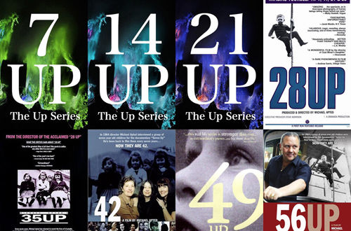

《人生七年》、《人间世》观后感

最近疲于找实习，感觉自己能力不足，有些迷茫，遂重温了《人生七年》、《人间世》，竟有些新的感受。
1. 《人生七年》观后感
- 《人生七年》感受到阶级血淋淋地存在，且每个人深受其影响。从一出生，影响就潜移默化地开始了，从家庭背景、思维方式、教育资源、人生规划等方面。7岁的高富帅三人组John、Andrew和Charles的谈吐和未来规划就能初见端倪
- 岁月无情，每隔七年都能看到孩子们又衰老了许多
- 没有那么多的理所应当，人们只会看到意气风发春风得意，而不会深挖其背后的坚毅与努力，John、Nick是真的唯有努力才能让这一切看起来毫不费力的践行者
- 阶级壁垒极难打破，但我们却可以选择属于自己的追求与幸福，以及给予孩子的教育
- 成功从来没有一个权威的定义，有的只是我们从小遵循的普世模式——上个好学校，找个好工作，赚很多很多钱，然后等中年终于获得经济自由时才能放下一切？
- 可绝大多数人到老年也不能达到自己限定的条件，壮志难酬，抑郁寡欢，这时才开始反思是否什么错了啊？
- 这条普世的成功之路真的能导向成功么，且只有获得成功之后才能实现人生价值和自我实现么？
- 从纪录片中可发现不同阶级的人追逐自我价值的方式多样，但大多都能从帮助他人的博爱与服务社会的奉献中找到自我满足和实现人生价值。
- 精英阶层的律师John也说：“在法庭上依据枯燥的条文拿下一场大官司的胜利，远没有他尽自己的能力帮助别人得到的幸福感多”。
- 伦敦的平民Lynn事业上开始是在图书馆，后来是流动图书馆，再后来回到图书馆给孩子们讲故事，她很喜欢教孩子们看书，生活平淡而满足。
- 福利院孩子Paul，后来与妻子一起去一家养老社区工作，在那打下手，修补房子呀，送东西之类，服务别人让他们体会到了更大的满足。
- 单亲家庭的Symon收养了几千个孩子，付出了许多，也收获了无与伦比的快乐。
- 思考自己究竟以什么模式活着，找到自己内心真正想要什么？当然，这值得我们用一生来寻找答案。
2. 《人间世》观后感
- 感受到人间疾苦和生命的规律。从我们呱呱坠地来到人间，经历短暂的一生，然后无可避免地生病、衰老与死去。这是亘古不变的规律，生命或脆弱，却也坚强，总有能在危难之际爆发出难以置信的生命力。
- 身体健康，家人平安本就是一种即为难得的奢望
- 亲情、爱情、友情总有缺席的一天，珍惜珍重眼前人
人生不如意之事十之八九，安静平和，身心舒畅，便是清欢。
相关文章